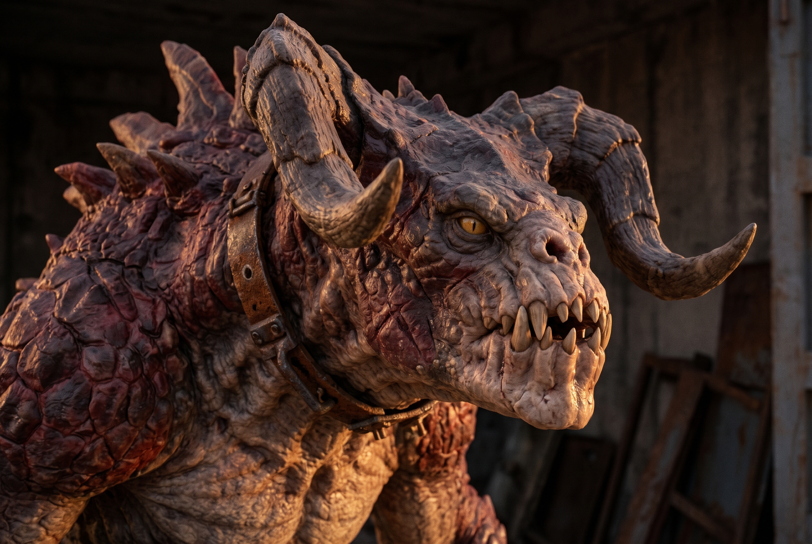
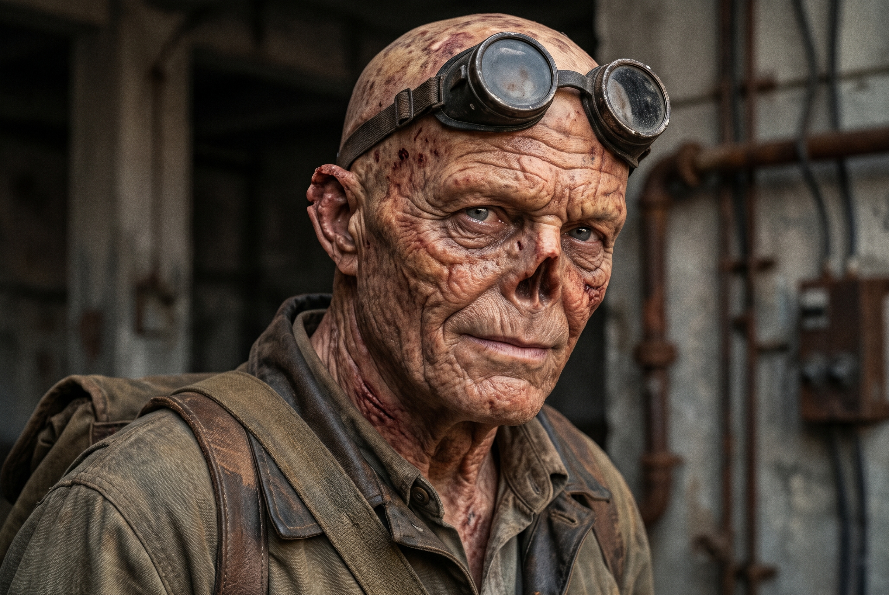
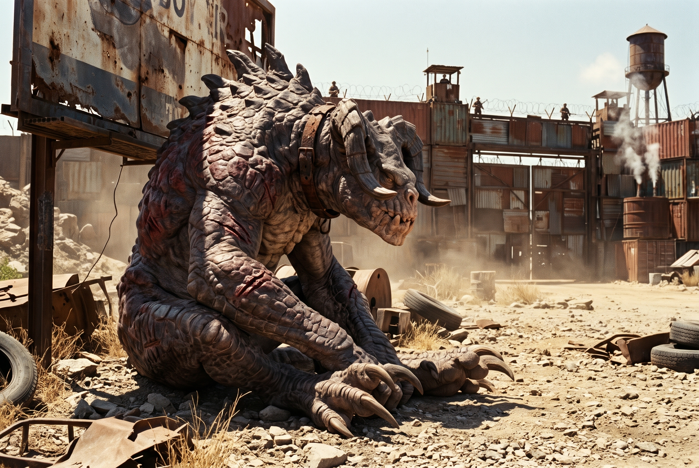

Земля дрожала под когтями размеренно, глухо. Он двигался на четырех лапах не потому, что не умел выпрямиться во весь свой трехметровый рост, а чтобы казаться меньше ночному небу и реже ловить грудью холодный радиоактивный ветер.
Его звали Саргот. Это имя было выжжено клеймом на внутренней стороне его металлического ошейника, который давно заржавел и треснул, но так и остался висеть на чешуйчатой шее грубым стальным браслетом. Ученые в белых костюмах из комплекса под землей называли его «Экземпляр С-7». Они же вживили ему под череп чипы, накачали модифицированным ВЭФ и научили понимать символы, чертежи и человеческую речь, пока однажды сами не задохнулись в собственном бункере, когда реактор дал течь.

Саргот выжил. Его кожа держала удары осколков и мелкий калибр, его глаза видели инфракрасный след теплой крови на расстоянии мили. Но в черепе, среди первобытной ярости хищника, поселилась тишина. Мысли текли не рычанием, а словами.
Обычные когти смерти из диких стай чуяли это. Для них он пах чужаком: от него несло металлом, лекарствами и той неестественной неподвижностью взгляда, которая свойственна только существам с разумом. Дикие скалились и бросались в драку за территорию. Саргот убивал их, но каждый раз уходил с тяжестью в груди: он был слишком чудовищем для людей и слишком человеком для зверей.
Пока он не набрел на Кратер Свалки.
Воздух здесь трещал от радиации так, что у обычного человека за пару часов выпали бы зубы. Для Саргота этот фон был почти домашним теплом — чешуя приятно покалывала. Но посреди ржавых остовов довоенных грузовиков жил кто-то еще. Саргот услышал его за сотню ярдов: скрип протеза, сухое покашливание и металлическое позвякивание гаечного ключа.
Обычно разумные существа кричали и стреляли при первом же звуке его шагов. Этот — даже не повернулся сразу.
— Если ты из банды тех недоумков из карьера, то учти: патронов у меня нет, жрать тут нечего, а медная проволока заминирована, — проскрипел голос, похожий на трение двух наждачных кругов.
Саргот бесшумно опустил передние лапы на битый кирпич. Из-за капота тягача показалась фигура в засаленном кожаном фартуке и круглых сварочных очках. Кожа на лице существа напоминала гнилое вяленое яблоко, нос отсутствовал, а на черепе клочьями торчали седые волоски. Гуль.

Гуль поднял взгляд. Его единственная целая бровь поползла вверх, открывая мутный, но совершенно трезвый желтый глаз. Пальцы с обломанными темными ногтями выпустили ключ. Инструмент со звоном упал на стальной лист.
— Матерь Божья... — выдохнул гуль, не двигаясь с места. — Вот теперь точно приплыли. Радиационный психоз на восьмом десятке. Ты настоящий или меня просто переклинило на изопропиле?
Саргот смотрел на него. Гули пахли иначе, чем гладкокожие: сернисто, сухо, без сладковатого запаха страха, от которого у диких когтей сводило челюсти голодом. От старика пахло машинным маслом, табаком и старой пылью.
Коготь сделал шаг вперед. Земля под ним хрустнула. Он медленно опустил массивную рогатую голову почти до уровня груди гуля, стараясь контролировать диафрагму. Голосовые связки когтя смерти не были созданы для человеческой фонетики — каждый звук давался с усилием, через низкий, утробный рокот, от которого вибрировали металлические листы под ногами.
— Нас-с... то-я-щий, — пророкотал Саргот.
Гуль замер. Его челюсть слегка отвисла. Он медленно перевел взгляд с полуметровых костяных серпов на лапах на желтые глаза ящера с вертикальными зрачками.
— Ты... говоришь? — тихо переспросил старик, забыв даже потянуться за карабином, висевшим на ржавом крюке за спиной.
— Го-во-рю, — Саргот выпрямился чуть назад, показывая, что не готовится к прыжку. — Не... стре-ляй.
Старик издал странный звук — сначала похожий на судорогу, а потом перешедший в сиплый, лающий смех. Он осел прямо на перевернутое ведро из-под смазки и вытер лоб тыльной стороной ладони.
— Стрелять? Парень, у меня в стволе три патрона сорок четвертого калибра с мятыми гильзами. Я ими разве что собственную челюсть тебе в пасть выбью. Меня зовут Барнаби. А ты, стало быть... дипломат из преисподней?
Так началось самое странное содружество на сотни миль вокруг.
Барнаби оказался механиком довоенной закалки. Он помнил мир до бомб смутно, обрывками, но помнил главное — как заставить работать генераторы, как очистить воду и как обращаться с теми, кого остальной мир списал в утиль. Люди из соседних поселений держали Барнаби за прокаженного, сбрасывали ему лом в обмен на очищенные фильтры и чиненые помпы, но в свои города не пускали.
Саргот стал для старика тем, кем никогда не мог стать человек: идеальным напарником. Двухтонный блок двигателя, который Барнаби не мог сдвинуть лебедкой три недели, Саргот поднял двумя когтями и перенес через всю мастерскую, просто повинуясь жесту старика. Взамен Барнаби приносил ему соль, жареное мясо рад-оленей (к которому Саргот быстро привык, начав презирать сырую падаль) и, главное, книги.
По вечерам, когда Кратер заливало зеленоватым фосфорным свечением, Барнаби зажигал керосинку. Коготь смерти аккуратно, кончиком чудовищного когтя, осторожно переворачивал хрупкие страницы старых учебников по физике или потрепанных романов, а старик читал вслух, комментируя человеческие глупости.
— Они боятся не твоих зубов, Саргот, — говорил Барнаби, выпуская струю горького самокруточного дыма. — Они боятся того, что ты больше их. Сильнее их. И если ты при этом еще и думаешь — всё, их мирок рушится. Гладкокожие привыкли, что всё, что не похоже на них, должно либо служить им, либо лежать в канаве с пулей во лбу. Со мной они поступают почти так же, просто пули экономят.
Но идиллия на свалке не могла длиться вечно.
В паре переходов от Кратера стоял Джанктаун-2 — укрепленное поселение фермеров и торговцев. Несколько недель шли кислотные дожди, насосы водонапорной башни поселения встали, а местный колодец отравило грунтовыми водами. Барнаби знал, как починить насос — у него на складе лежала нужная крыльчатка и медные трубки. Но сам он, со своим хромым суставом, не донес бы тяжелые детали через ущелья, где рыскали банды рейдеров «Ржавые псы».
— Придется идти вместе, здоровяк, — сказал Барнаби, затягивая ремни на тяжелом брезентовом тюке. — Только сделаем так: к воротам ты не выходишь. Сидишь в перелеске из мертвых сосен. Я отдам железки старосте, заберу медикаменты и патроны, и мы уйдем. Если они увидят тебя — пальнут из всех стволов, даже не слушая.
Саргот лишь кивнул. Он уже знал людей по рассказам старика и не питал иллюзий.
Они вышли на рассвете. Проблемы начались у высохшего русла реки. «Ржавые псы» не просто сидели в засаде — они ждали именно караван или тех, кто пойдет к городу. Пятеро рейдеров в шипастой броне окружили хромающего гуля раньше, чем тот успел достать свой дряхлый револьвер.
— Гляньте, кусок падали ползет! И железо тащит. Слышь, гнилой, скидывай тюк и проваливай, пока мы из тебя факел не сделали!
Барнаби поднял руки, пятился к скале:
— Забирайте металл, парни. Только не дурите. Вы не знаете, что...
Удар прикладом в грудь сбил старика с ног. Тюк покатился по камням. Рейдер с бензопилой наперевес заржал, занося ногу, чтобы раздробить гулю ребра.
В этот момент воздух в ущелье словно стал гуще. Температура резко упала — так казалось от первобытного ужаса, который внезапно накрыл нападавших. Земля под ногами бандитов мелко задрожала.
Из пыльной пелены сухого кустарника без единого рева, с пугающей, неестественной для такой массы грацией шагнула тень. Три метра бронированной чешуи цвета запекшейся крови. Рога, загибающиеся назад, как у демонов со старых картин.
Один из рейдеров замер с открытым ртом:
— К-коготь... Откуда здесь, твою мать, Коготь?!
Они вскинули автоматы, готовые палить наугад. Но монстр не бросился на них слепой яростью, как положено зверю. Он сделал шаг в сторону, уходя с траектории огня за гранитный валун, а в следующий миг огромная когтистая лапа вырвала ствол из рук ближайшего стрелка, скрутив металлическую ствольную коробку, будто она была из фольги.
Второй бандит открыл огонь. Пули 5.56 ударили в плечевой щиток Саргота, высекая искры и рикошетя в скалы. Боль была острой, но привычной. Саргот шагнул вперед, сбил стрелка ударом тяжелого хвоста — человек пролетел добрых десять метров и затих, сломав хребет о камни.
Оставшиеся трое попятились, целясь в чудовище дрожащими руками. Они ждали, что зверь разорвет их на куски.
Саргот не стал атаковать. Он встал во весь рост между бандитами и лежащим на земле Барнаби, расправил мощные плечи и наклонился к главарю банды. Желтые глаза сузились.
— У-хо-ди-те, — пророкотал он. Низкая частота голоса отдалась в костях людей тошнотой и животным ужасом. — И-ли... ум-ри-те.
Автомат выпал из рук главаря сам собой. В глазах рейдера застыло понимание чего-то невозможного, ломающего саму природу Пустоши: эта тварь не просто убивала — она приказывала.
— О-оно... оно разумное... Бежим! В рассыпную! — взвизгнул бандит, бросая оружие и бросаясь вверх по склону. Через пять секунд в ущелье осталась только осевшая пыль и стоны оглушенного рейдера у скалы.
Саргот тяжело выдохнул через ноздри, стравливая горячий воздух. Он опустился на колени рядом со стариком. Осторожно, буквально двумя кончиками смертоносных лезвий, он подцепил лямку брезентового тюка и положил его рядом с гулем.
Барнаби с трудом сел, держась за ушибленные ребра, сплюнул темную жижу и посмотрел на кровоточащие отметины от пуль на плече Когтя.
— Черт тебя дери, Саргот... Я же просил сидеть в кустах, — прохрипел старик, но в его единственном глазу блеснула скупая слеза. Он протянул дрожащую руку и похлопал ящера по твердой, как гранит, предплечной чешуе. — Спасибо, парень. Без тебя я бы пошел на растопку.
— Ты... цел? — рокотом переспросил Саргот, наклонив голову набок.
— Скриплю, но не развалился, — Барнаби поднялся, опираясь на плечо гиганта. Он посмотрел в сторону виднеющихся вдалеке ворот Джанктауна, откуда на звуки выстрелов уже высыпали дозорные с винтовками наперевес. — Ну что, напарник... Кажется, план «по-тихому» накрылся медным тазом. Они всё видели в бинокли.
Старик поднял с земли гаечный ключ, закинул тюк себе за спину и твердо посмотрел на Саргота:
— Пойдем. Будем знакомиться с людьми. Если они попробуют стрелять — я встану первым. Пусть сначала объяснят мне, старому дураку, почему зверь оказался человечнее тех ублюдков, которых они называют своими соседями.
Саргот молча кивнул и пошел рядом со стариком, подстраивая свой огромный, тяжелый шаг под хромающую походку гуля. Впереди были направленные дула турелей и испуганные глаза людей, но за его спиной впервые в жизни был кто-то, ради кого стоило держать этот удар.
Кровь рейдера всё ещё засыхала на толстой чешуе хвоста. Саргот чувствовал её медный запах, и это мешало сосредоточиться. Убить гладкокожего оказалось слишком легко. Одно движение — и хрупкий позвоночник сломался, как сухая ветка. Если он сделает хотя бы одно неверное, слишком резкое движение у ворот, начнется бойня, которую он не сможет остановить, не убив их всех.
А убивать он больше не хотел.
Джанктаун-2 ощетинился стволами. Стены из сваренных вместе морских контейнеров гудели от напряжения: на ржавых вышках суетились дозорные, а над главными воротами с характерным электронным писком развернули дула две крупнокалиберные автотурели.
— Стоять! Ни с места, мать вашу! — раздался усиленный мегафоном срывающийся голос со стены. — Гуль! Прикажи этой твари лечь мордой в грязь, или мы превратим вас обоих в решето!
Барнаби тяжело вздохнул, остановился и медленно, чтобы все видели, поднял вверх пустые руки.
— Спокойно, капитан! — проскрипел старик, стараясь перекричать ветер. — Вы в свои окуляры всё видели! Эти ублюдки из «Ржавых псов» хотели пустить меня на запчасти. Мы принесли крыльчатку для вашей водонапорки!
Саргот замер. Он возвышался над Барнаби, как гранитный утес. Инстинкты кричали ему припасть к земле, уйти с линии огня, прикрыться автомобильным остовом и ударить с фланга. Так поступил бы дикий коготь. Но Саргот сделал глубокий вдох, подавляя звериную сущность.
Он медленно, демонстративно опустился на колени. Затем сел на задние лапы, сложив свои смертоносные костяные серпы на груди так, чтобы они ни на кого не указывали. Он опустил рогатую голову, глядя на людей снизу вверх — поза абсолютно неестественная, почти унизительная для высшего хищника Пустоши.
На стене повисла тяжелая, звенящая тишина. Слышно было только, как ветер гоняет песок.
К краю стены подошел коренастый мужчина в потертой боевой броне. Он опустил бинокль. Его руки откровенно тряслись.
— Я видел, как он швырнул человека на десять метров, Барнаби. Я видел это своими глазами. Оно ручное? Как ты его контролируешь? У тебя пульт? Ошейник с взрывчаткой?
Старик усмехнулся, хотя в его положении это было безумием.
— Капитан, если бы я пытался его контролировать, он бы давно носил мои кишки вместо галстука. Он со мной по своей воле.
Мужчина на стене нервно сглотнул, не отводя винтовку.
— Я не пущу эту тварь в город. У нас дети. У нас фермы. Одно замыкание в его тупой башке, и от нас останется только кровавое месиво! Пусть оставляет железки и убирается в пустошь. А ты можешь зайти, так и быть.
Саргот понял, что переговоры заходят в тупик. Люди пахли кислым, прогорклым страхом. Страх делает их непредсказуемыми. Страх заставляет жать на курок. Ему нужно было сломать их картину мира, чтобы они перестали видеть в нем только угрозу.
Монстр чуть приподнял голову. Его горло издало низкий, рокочущий звук, похожий на скрежет камня о камень. Дозорные на стенах вздрогнули, кто-то охнул, готовясь стрелять.
Но вместо рева над песками прозвучали слова. Растянутые, хриплые, произнесенные с огромным усилием, но абсолютно разборчивые.
— Я... не... тро-ну... ва-ших... де-тей.
Казалось, у ворот Джанктауна-2 остановилось время. Кто-то из охранников выронил рацию, и она со стуком покатилась по металлическому настилу вышки. Капитан побледнел так, что его лицо слилось по цвету с серой стеной.
— Тот... че-ло-век... — Саргот медленно кивнул в сторону ущелья, где остался мертвый рейдер. — Он... хо-тел... убить... Бар-на-би. Я... за-щи-щал. В го-род... не... пой-ду.
Саргот тяжело поднялся с колен. Каждый его мускул был расслаблен. Он протянул вперед огромную лапу с висящим на одном когте брезентовым тюком с деталями и аккуратно опустил его на землю метрах в двадцати от ворот. Затем сделал три медленных шага назад и снова сел, сложив руки.
— Матерь заступница... — прошептал капитан на стене, забыв про мегафон. — Оно разговаривает. Оно... думает.
Барнаби подобрал тюк и захромал к воротам.
— Я же говорил, капитан, — негромко сказал гуль, останавливаясь у самого входа. — Вы судите по внешности. А человечности в этом парне больше, чем во всех тех мародерах, от которых вы отстреливаетесь каждый месяц. Я починю ваш насос. А он подождет меня здесь.
Тяжелые створки ворот медленно, со скрипом поползли в стороны. Капитан сделал жест рукой, и турели перешли в режим ожидания, опустив стволы.
Когда Барнаби скрылся за воротами, Саргот остался один. Он сидел в тени ржавого билборда, прикрыв желтые глаза. Стены города были всего в сотне шагов. Он слышал, как внутри плачут дети, как перешептываются напуганные люди, как бьются их сердца. Он мог бы разорвать эти ворота за минуту.
Но он просто сидел и ждал своего друга, стараясь дышать как можно тише, чтобы никого не пугать. Первый шаг был сделан.

Солнце Мохаве безжалостно пекло бронированную спину, но Сарготу это даже нравилось. Тепло проникало под толстую чешую, разгоняя кровь. Он сидел неподвижно, как изваяние из запекшейся грязи и плоти, прикрыв глаза полупрозрачным вторым веком.
Для любого стороннего наблюдателя он казался дремлющим чудовищем. Но в его голове, разделенной надвое безжалостным вмешательством скальпеля и нейрочипов, шла непрерывная работа. Мир говорил с ним на языке запахов, вибраций и инфракрасных пятен, а разум методично переводил это в слова.
Саргот слышал Джанктаун-2 так ясно, будто у города не было стен. Он слышал сотни сердец. Учащенный, сбивчивый ритм охранников на вышках. Мелкая, птичья дрожь детских сердец где-то в глубине лагеря. Запах был еще красноречивее: ржавчина, сухая земля, сгоревшее топливо и густой, кислый смрад человеческого страха.
Древний, вшитый в ДНК инстинкт альфа-хищника монотонно гудел где-то у основания черепа: «Слабость. Мясо. Хрупкие кости за тонким металлом. Ударь. Порви. Забери территорию».
Саргот медленно втянул воздух ноздрями и силой воли придавил этот первобытный зов. Холодная, искусственная логика, подаренная ему учеными Анклава, взяла верх.
«Хрупкие», — пророкотало в его мыслях.
Люди были невероятно слабыми созданиями. Они строили себе клетки из довоенного мусора, чтобы спрятаться от мира, который сами же когда-то и сожгли. Они прятались за железными палками, извергающими свинец, потому что без них не могли прожить на Пустоши и дня. Они боялись его когтей, боялись его силы, но при этом сами убивали друг друга в ущельях за грязную одежду и куски меди. Тот рейдер с бензопилой... он был глупее дикого брамина.
Саргот чуть пошевелил шеей. Ржавый ошейник привычно царапнул чешую. Иногда он завидовал своим диким собратьям. Они не знали понятия «вина». Не знали слова «милосердие». Они просто рвали глотки, повинуясь голоду. Сознание, которое вживили в него люди в белых халатах, было тяжелой болезнью. Оно заставляло анализировать. Заставляло выбирать не убивать там, где убийство было самым простым выходом.
Его мысли переключились на Барнаби.
Саргот сфокусировал слух, отсекая лишние шумы, и уловил знакомое шарканье неровной походки старика где-то у водонапорной башни. Барнаби пах иначе, чем эти люди за стеной. В гуле не было этого кислого страха. Он пах табаком, старым маслом и чем-то еще... чем-то спокойным.
Почему старик заступился за него перед капитаном? Гуль мог просто сказать: «Это мой ручной монстр», мог подыграть их страхам, чтобы обезопасить себя. Но он назвал его разумным. Назвал человечным.
«Друг», — Саргот перекатил это слово в голове. Сложное, нелогичное понятие. Оно противоречило законам Пустоши, где сильный всегда пожирал слабого. Барнаби был слаб физически, его тело буквально рассыпалось от старости и радиации. Но внутри этого гниющего панциря был стержень, о который сломались бы любые когти. Старик не побоялся принять чудовище. Значит, чудовище должно защитить старика от тех, кто считает себя людьми.
Внезапно из-за стен раздался громкий металлический лязг, за которым последовал низкий, нарастающий гул. Земля под лапами Саргота мелко завибрировала. Насос заработал.
Спустя мгновение Саргот уловил, как изменился запах над Джанктауном. Кислый смрад паники начал растворяться, уступая место влажному, свежему запаху поднимающейся из глубины воды и человеческому облегчению. На стенах кто-то радостно закричал.
Саргот шумно выдохнул, подняв облачко пыли, и впервые за долгое время его напряженные плечи слегка опустились. Он прикрыл глаза. Ждать оставалось недолго.
Тяжелый скрежет несмазанных петель разорвал тишину пустоши. Саргот открыл глаза и медленно поднялся, стряхивая с чешуи налипшую пыль. Из-за приоткрытых створок ворот показался Барнаби. Старик заметно прихрамывал, но на его изуродованном радиацией лице играла кривая, довольная ухмылка.
Через плечо гуля был перекинут новый брезентовый мешок, который приятно позвякивал.
— Ну что, здоровяк, — проскрипел Барнаби, похлопав по мешку. — Вода пошла. Эти идиоты чуть не угробили систему фильтрации, но я успел вовремя. Идем домой.
Они двинулись в обратный путь, когда солнце уже начало клониться к горизонту, окрашивая растрескавшуюся землю Мохаве в багровые тона. Саргот шагал рядом, чутко вслушиваясь в звуки вечереющей пустыни.
— Знаешь, капитан оказался не таким уж жмотом, когда увидел чистую воду, — продолжал болтать старик, пока они спускались в ущелье. — Отсыпал сотню крышек, дал пару ампул Мед-Х и чистого антирадина. Но самое интересное не это. Местные мусорщики откопали на севере какую-то довоенную железяку. Думали, это радиоприемник, пытались поймать музыку Нью-Вегаса, но она только шипела. Отдали мне в довесок, как хлам.
Уже в сумерках они спустились в родной Кратер Свалки. Привычный треск счетчика Гейгера и запах ржавчины успокаивали. Это была их территория. Но Саргот чувствовал: что-то изменилось. Воздух казался слишком плотным, а привычный пейзаж из ржавых остовов машин вдруг показался тесной клеткой.
Барнаби зажег керосиновую лампу в своем гараже, бросил мешок на верстак и выудил оттуда массивный прямоугольный блок из черного полимера с тусклым экраном и выцветшими военными маркировками.
Саргот протиснулся в широкий проем ворот гаража и лег на бетонный пол, положив тяжелую голову на скрещенные лапы. Его желтые глаза неотрывно следили за руками старика.
Гуль вооружился отверткой, подсоединил пару проводов от автомобильного аккумулятора и щелкнул тумблером на черном блоке.
Устройство ожило. Экран мигнул зеленым, и из встроенного динамика вырвался резкий, режущий слух писк, перемежающийся треском статики. Барнаби нахмурился, подкручивая частоту, но писк не исчезал. Он звучал ритмично.
Внезапно Саргот глухо зарычал и резко поднял голову.
Боль пронзила основание его черепа. Металлический браслет на шее, казалось, стал горячим. Вшитый в мозг нейрочип, который молчал с самого побега из бункера Анклава, вдруг отозвался на частоту черного блока.
Перед глазами Когтя замелькали цифры, символы и зеленые линии топографических карт, проецируемые прямо на сетчатку. Звериная часть его разума запаниковала, требуя разбить устройство, но человеческая — вцепилась в поступающую информацию.
— Эй, парень, ты чего? — Барнаби отшатнулся от стола, заметив, как напряглись мышцы ящера. — Эта штука бьет тебе по ушам? Я сейчас выключу...
— Не... тро-гай, — с усилием выдавил Саргот, поднимаясь на задние лапы и нависая над верстаком.
Он протянул один длинный коготь и аккуратно, чтобы не проткнуть пластик, нажал на неприметную кнопку сбоку корпуса. Писк прекратился. Вместо него сквозь статику пробился искаженный, механический голос:
«Директива Омега... Код доступа принят. Объект "КОВЧЕГ-7" изолирован. Биоматериал альфа-уровня в стазисе. Системы охлаждения критически повреждены. Требуется эвакуация... Повторяю...»
Затем голос сменился зашифрованными координатами, которые чип Саргота мгновенно перевел в понятный маршрут.
Барнаби присвистнул.
— Военный маяк? «Ковчег-7»... Звучит как нетронутый бункер. Или лаборатория. Если там есть технологии, за них можно купить целый город.
Саргот смотрел на мигающий зеленый экран. В его памяти всплывали обрывки воспоминаний: холодные операционные столы, люди в скафандрах, крики его сородичей, которых уводили в коридоры, откуда они никогда не возвращались. Но главное — голос на записи упомянул «биоматериал альфа-уровня в стазисе».
Он не был единственным выжившим. Там, в этом бункере, могли быть другие. Такие же, как он. Или те, кто мог снять с его шеи ошейник и остановить постепенную деградацию чипа в его голове.
Саргот повернул массивную морду к гулю. Желтые глаза в свете керосиновой лампы горели мрачной решимостью.
— Мы... у-хо-дим, — низко пророкотал Коготь Смерти. — Это... моё... про-шлое. Я... дол-жен... най-ти.
Барнаби посмотрел на радиомаяк, затем на огромного монстра. Старик медленно улыбнулся, обнажая пожелтевшие зубы, и потянулся за своим старым карабином, висящим на стене.
— Ну, раз уж мы теперь официальные партнеры... Не пускать же тебя одного в какую-то секретную дыру, полную ловушек, — гуль сдул пыль с прицела. — Собираем вещи, здоровяк. Похоже, отсиживаться на свалке больше не получится. Пора надрать задницу этому вашему прошлому.
Ночь в Мохаве опускается быстро, словно кто-то набрасывает на остывающую землю тяжелый, пыльный плед. Температура резко падает, а небо взрывается тысячами холодных, равнодушных звезд, свет которых больше не затмевают огни человеческих городов.
Они шли уже несколько часов. Путь на северо-запад, куда указывал сигнал «Ковчега-7», пролегал через изрезанные ветрами каньоны и высохшие соленые озера. Саргот двигался впереди, прокладывая путь сквозь завалы из покореженных довоенных автомобилей и рухнувших опор ЛЭП. Его инфракрасное зрение легко выхватывало во тьме силуэты спящих радскорпионов или затаившихся в камнях койотов, и он заранее уводил Барнаби в сторону от ненужных схваток.
Когда хромота старика стала слишком очевидной — он начал все чаще опираться на свой карабин, как на трость, — Саргот остановился у остова разрушенной заправочной станции. Огромный бетонный козырек, наполовину ушедший в песок, создавал идеальное укрытие от пронизывающего радиоактивного ветра.
Барнаби с благодарным кряхтением опустился на перевернутую покрышку грузовика, вытянул протез и достал из поясной сумки помятую флягу.
— Не думал, что на старости лет снова пойду в поход, — пробормотал гуль, разводя небольшую, бездымную горелку на сухом спирте, чтобы хоть немного согреть узловатые пальцы. — Обычно мой самый длинный маршрут — от верстака до нужника и обратно.
Саргот опустился на землю напротив него. В свете тусклого синего пламени горелки его чешуя казалась угольно-черной, а рога отбрасывали на бетонную стену жуткие, изломанные тени. Он молча смотрел на огонь. Для него холод не был проблемой, но само зрелище пламени завораживало ту часть его мозга, которая всё еще училась быть разумной.
— Ты... пом-нишь... мир... до ог-ня? — неожиданно нарушил тишину Саргот. Его голос, низкий и вибрирующий, казалось, исходил не из пасти, а из самой его массивной грудной клетки.
Барнаби замер с флягой у рта. Он посмотрел на когтя смерти долгим, нечитаемым взглядом, затем сделал глоток и вытер губы рукавом.
— До огня? До бомб, ты имеешь в виду? — старик горько усмехнулся. — Помню, Саргот. Хотя иногда мне кажется, что это был просто сон, который я увидел в пьяном бреду. Я был молод. Работал автомехаником в Бейкерсфилде. У меня была жена, Сара... и собака. Золотистый ретривер. Глупая, счастливая псина.
Барнаби покрутил флягу в руках. Его единственный глаз смотрел куда-то сквозь пламя горелки.
— Когда всё полетело в тартарары, я был в гараже. Подземном. Это меня и спасло... или прокляло, тут как посмотреть. Когда я выбрался на поверхность, неба не было. Только пепел и красная мгла. Я искал свой дом неделю, бродил по руинам. А когда радиация начала жрать мою плоть, я думал, что умру. Моя кожа слазила лоскутами, волосы выпадали. Но смерть всё не шла. Вместо нее пришло вот это, — гуль постучал костяшками пальцев по своему изуродованному лицу. — Я видел, как мои друзья превращались в диких тварей, теряя разум от боли и радиации. Видел, как те, кто укрылся в Убежищах, выходили наверх и стреляли в нас просто потому, что мы стали уродливы. Я потерял всё. Но, знаешь... я научился чинить вещи. Потому что это единственное, что имело смысл в сломанном мире. Если ты можешь что-то починить — значит, еще не конец.
Саргот слушал, не шевелясь. Звериные инстинкты внутри него молчали, подавленные тяжестью истории этого хрупкого существа.
— А теперь твоя очередь, напарник, — Барнаби поднял на него взгляд. — Что за «Ковчег-7»? Что они с тобой сделали?
Саргот тяжело вздохнул. Из его ноздрей вырвались две струйки пара. Он инстинктивно поднял когтистую лапу и провел кончиком лезвия по ржавому ошейнику на шее.
— Боль, — медленно произнес он. — Моё... пер-вое... вос-по-ми-на-ни-е... это... боль.
Он прикрыл желтые глаза, и в его голове снова вспыхнули яркие, стерильно-белые картины прошлого, отпечатанные на нейрочипе.
— Я не пом-ню... как был... в яй-це. Не пом-ню... ма-тери. Я пом-ню... бе-лый свет. За-пах... спир-та... и го-ре-ло-го мя-са. — Саргот делал паузы между фразами, тщательно подбирая человеческие слова для описания нечеловеческого опыта. — Их бы-ло... мно-го. В бе-лых ко-стю-мах. Они... ре-за-ли мой че-реп. Встав-ля-ли... ме-талл. И ка-ждый раз, ког-да я пы-тал-ся... ры-чать, ошей-ник... бил то-ком.
Барнаби поежился, несмотря на тепло от горелки.
— Анклав. Ублюдки из довоенного правительства, — процедил старик. — Они всегда любили играть в Бога.
— Они хо-те-ли... ору-жи-е, — продолжил Саргот. — Ору-жи-е, ко-то-рое... по-ни-ма-ет при-ка-зы. Но не за-да-ет... во-про-сов. Они за-гру-жа-ли... в мой мозг... сло-ва. Чер-те-жи. Так-ти-ку. Но вме-сте с эти-ми зна-ни-я-ми... при-шло не-что дру-гое.
Саргот открыл глаза и посмотрел прямо на гуля. В его вертикальных зрачках отражался синий огонек.
— При-шло... осо-зна-ни-е. Я по-нял... что я — раб. Я по-нял, что та-кое... клет-ка. Зверь в клет-ке... про-сто злит-ся. Ра-зум-ный в клет-ке... схо-дит с у-ма от от-ча-я-ни-я.
Коготь смерти перевел взгляд на свои исполинские лапы, способные пробить силовую броню насквозь.
— Был о-дин. Док-тор А-рис. Он не пах... как ос-таль-ные. Он не пах... же-сто-кос-тью. Он при-но-сил мне... кни-ги. Он го-во-рил со мной, ког-да ка-ме-ры... бы-ли вы-клю-че-ны. Он ска-зал... что у ме-ня есть... ду-ша. А по-том... ре-ак-тор дал течь.
Саргот замолчал. В воздухе повисла тяжелая тишина, нарушаемая только воем ветра в пустых оконных проемах заправки.
— Что случилось потом, Саргот? — тихо спросил Барнаби.
— Си-ре-ны, — глухо отозвался монстр. — Па-ни-ка. Воз-дух стал... го-ря-чим и я-до-ви-тым. О-ни... за-кры-ли гер-мо-две-ри. Бро-си-ли нас... у-ми-рать. Но А-рис... он при-шел к мо-ей клет-ке. Он уже... каш-лял кро-вью. Его ко-жа... чер-не-ла. Он на-жал... кноп-ку на пуль-те. Дверь... от-кры-лась. Он ска-зал: "Бе-ги, С-7. Будь... луч-ше нас". И у-мер.
Саргот тяжело ударил хвостом по бетону, подняв облако радиоактивной пыли.
— Я вы-брал-ся. Я шел че-рез... пус-то-ши. Я пы-тал-ся... го-во-рить с людь-ми. Но они ви-де-ли толь-ко... клы-ки. Я пы-тал-ся... уй-ти к ди-ким. Но о-ни чу-я-ли на мне... за-пах лю-дей. Я был ни-где. По-ка... не на-шел... твою свал-ку.
Барнаби долго сидел молча, глядя на тлеющий остаток сухого спирта. В этом разрушенном мире, где человеческая жизнь стоила дешевле патрона, перед ним сидело трехметровое чудовище, которое понимало ценность милосердия лучше, чем большинство выживших.
— Мы с тобой, Саргот... два куска бракованного материала на этой великой помойке, — старик с трудом поднялся на ноги и, хромая, подошел к когтю смерти. Он не задумываясь положил свою костлявую руку на мощное, покрытое шрамами плечо гиганта. — Мир списал нас в утиль. Людям мы кажемся монстрами, а настоящие монстры считают нас слабыми.
Барнаби посмотрел на мигающий зеленый экран маяка, который лежал в его сумке.
— Но знаешь что? Доктор Арис был прав. То, что они с тобой сделали — вложили разум в машину для убийств, — это было жестоко. Но именно это сделало тебя свободным. Если там, в этом «Ковчеге-7», есть другие... мы должны их вытащить. Никто не заслуживает родиться и умереть в клетке.
Саргот поднял голову. Прикосновение сухой руки гуля не несло угрозы. Оно несло уверенность. Монстр кивнул, и его рога с тихим стуком задели бетонную стену.
— Мы... вы-та-щим их, — рокотом подтвердил Саргот. Он легко, словно пушинку, поднялся на ноги во весь свой огромный рост. — От-ды-хай, Бар-на-би. Я... бу-ду сто-ять... в до-зо-ре.
Старик усмехнулся, укутываясь в протертое спальное одеяло прямо на жестком бетоне.
— С таким дозорным, парень, я впервые за восемьдесят лет буду спать как младенец. Разбуди, когда небо начнет светлеть. Завтра у нас долгий день.
Ночь продолжалась. Барнаби вскоре захрапел, а Саргот замер у входа на заправку. Его глаза светились в темноте тусклым желтым светом, вглядываясь в горизонт, туда, откуда монотонно и призывно пульсировал невидимый радиосигнал забытого прошлого.
На рассвете Пустошь казалась вымершей, но воздух нес в себе перемены. Саргот стоял на краю Кратера, втягивая утренний холод ноздрями. Среди привычных запахов сырой земли, ржавого железа и гари появился новый — едва уловимый, но мгновенно заставивший его мышцы напрячься.
Запах крови. Не человеческой, не браминьей. Это был тяжелый, мускусный запах его собственной породы, густо смешанный с едкой гарью и пороховым дымом. Свои. Погибшие.
Барнаби, заметив, как Саргот замер, уставившись на восток, молча закинул за плечо брезентовый рюкзак и покрепче перехватил карабин.
— Чуешь что-то, здоровяк? — тихо спросил он.
— За-пах... кро-ви, — глухо пророкотал Саргот. — На-ши. Много.
— Значит, нам туда. Идем осторожно.
Они выдвинулись на рассвете, продвигаясь по высохшему руслу каньона. Саргот шел первым, почти прижимаясь к земле, чтобы не выделяться на фоне скал. С каждым милей запах становился сильнее, пока не превратился в удушливую, тяжелую волну.
Вскоре они вышли к скрытой низине, окруженной обрывистыми скалами — естественному убежищу, которое дикая стая когда-то выбрала для гнездовья. Но то, что они увидели, заставило даже видавшего виды Барнаби тихо выругаться.
Здесь была бойня.
Гнездо диких когтей смерти было разгромлено с безжалостной, механической жестокостью. Повсюду лежали огромные тела взрослых особей, изорванные крупнокалиберными патронами и выжженные плазмой. Скалы были закопчены, а земля — усеяна ржавыми гильзами от тяжелого вооружения и остатками выжженных армейских стимуляторов. Здесь явно действовала хорошо вооруженная группа — возможно, те самые военные или охотники из Анклава, о которых говорил Саргот, или тяжелые паладины Братства Стали.
Саргот медленно пошел среди павших сородичей. Звериная часть его разума глухо рычала от ярости, а человеческая — сжималась от тяжелой, бессильной скорби. Он подошел к огромной, израненной самке-матриарху, которая лежала, заваленная обломками скалы, словно до последнего защищая глубину пещеры. На ее бронированной шкуре запеклись следы от лазерных ожогов.
Вдруг ухо Когтя уловило едва заметный, хрупкий звук из-под завала, у которого лежало тело матери. Мелкое, ритмичное скрежетание.
Саргот опустился на колени. Его огромные лапы начали осторожно, одну за другой, убирать тяжелые обломки камней. Барнаби подошел ближе, держа карабин наготове, и заглянул в образовавшуюся нишу.
Там, в глубине земляного гнезда, укрытое телом погибшей матери от огня и взрывов, лежало одно-единственное уцелевшее яйцо когтя смерти.
Оно было крупным, размером с добрый арбуз, покрытое прочной, шероховатой скорлупой песочно-болотного цвета с темными крапинами. Но самое удивительное — скорлупа была живой. По ее поверхности пробегали едва заметные трещинки, а изнутри доносился слабый, настойчивый стук. Малыш пытался выбраться наружу, не подозревая, что весь его мир вокруг уже погиб.
Саргот замер, боясь пошевелиться. Его огромный коготь, способный разрывать сталь, завис в паре дюймов от хрупкой находки.
— Матерь Божья... — выдохнул Барнаби, опуская оружие. — Оно живое. Саргот, они пропустили его. Охотники ушли, думая, что покончили со всеми.
Саргот медленно опустил голову почти к самому гнезду. Его ноздри затрепетали, изучая запах. Малыш внутри пах жизнью, теплом и... продолжением.
— О-но... вы-жи-ло, — тихо, почти шепотом пророкотал гигант.
Он протянул свои огромные когтистые лапы, стараясь действовать как можно нежнее. Смертоносные серпы, которые еще вчера крушили врагов, теперь бережно, со всей возможной грацией обхватили крупное шероховатое яйцо. Саргот медленно поднял его, прижимая к своей бронированной груди, словно величайшую ценность на всей Пустоши.
Барнаби посмотрел на эту невероятную картину — огромный, покрытый шрамами монстр, бережно баюкающий неродившуюся жизнь, — и почувствовал, как к горлу подступает ком.
— Ну что, напарник, — гуль через силу улыбнулся, поправив рюкзак. — Кажется, наш поход к «Ковчегу-7» только что стал гораздо важнее. Мы не можем оставить его здесь. Забираем с собой. Устроим ему теплое место в рюкзаке, а ты присматривай. Похоже, ты теперь не просто выживший. Ты — старший брат.
Саргот бережно прижимал яйцо, чувствуя сквозь скорлупу слабые, но настойчивые толчки новой жизни. Его взгляд, обращенный на восток, стал еще тверже. Теперь у них была не просто цель. У них была надежда. Начинаем приключение.
Барнаби сбросил свой рюкзак на пыльные камни и критически оглядел массивную фигуру Саргота, баюкающего огромное яйцо.
— Если ты будешь тащить его в лапах, первый же снайпер или стая радскорпионов сделают из нас омлет, — проскрипел гуль, потирая подбородок. — Тебе нужны свободные когти, а мелкому — броня и тепло. Твоя хладнокровная ящериная родня обычно греет кладку вулканическими источниками или гниющим мясом, но у нас в пути ни того, ни другого не предвидится.
Старик развернулся и захромал к месту недавней бойни. Барнаби был не просто механиком; он был мусорным гением, способным собрать генератор из консервной банки и синей изоленты. Ближайший час низина оглашалась лязгом, ругательствами и шипением портативной газовой горелки.
Гуль без зазрений совести срезал с убитых наемников прочные кевларовые ремни и забрал толстую термоткань от спальных мешков. Но главной его находкой стала пробитая грудная пластина тяжелой боевой брони и наполовину разряженная микроядерная батарея от разбитого плазменного ружья.
— Смотри сюда, папаша, — Барнаби разложил перед Сарготом свое творение. Это был гибрид штурмовой разгрузки и инкубатора. — Я выгнул бронеплиту дугой. Внутри — три слоя изоляции. А между ними пустил медную проводку, запитанную от батареи. Я прикрутил к ней термореле от шлема того мертвого ублюдка. Эта штука будет поддерживать ровно тридцать восемь градусов. Не сварится, но и не замерзнет.
Саргот медленно кивнул. Его глаза внимательно следили за каждым движением старика.
— Ты... спас... его, — рокотом отозвался Коготь, бережно перекладывая яйцо в подготовленную мягкую нишу из термоткани.
— Я только гайки кручу, — отмахнулся Барнаби, хотя его единственный глаз довольно блеснул. — Давай, примеряй.
Надеть конструкцию на трехметрового ящера оказалось той еще задачей. Барнаби пришлось забраться на валун, чтобы перекинуть широкие кевларовые ремни крест-накрест через массивные, покрытые роговыми наростами плечи Саргота. Гуль намертво затянул карабины на широкой спине мутанта, надежно фиксируя бронированную колыбель на его груди.
Теперь яйцо покоилось в полной безопасности. Снаружи его прикрывала толстая композитная бронеплита, способная выдержать пулеметную очередь, а внутри тихо гудела и отдавала тепло медная сеть. Сарготу достаточно было чуть свести передние лапы, чтобы полностью закрыть грудь. При этом его смертоносные лезвия оставались абсолютно свободными.
Ящер сделал глубокий вдох, проверяя натяжение ремней. Броня сидела как влитая. Он опустил тяжелую морду и прислушался. Сквозь тихое гудение ядерной батареи он уловил знакомый, ровный стук маленького сердца. Ему стало тепло — и не только от медных проводов.
— Хо-ро-шо, — Саргот выпрямился, возвышаясь над разгромленным гнездовьем. — Те-перь... мы... мо-жем... ид-ти. Ков-чег-семь... ждет.
— Вот это другой разговор, — Барнаби проверил затвор своего карабина и щелкнул тумблером на черном пеленгаторе. Зеленый экран мигнул, указывая направление на северо-запад, прямо через выжженные каньоны. — Только держи ухо востро. Те, кто устроил здесь эту резню, вооружены до зубов и ушли совсем недавно. Если мы наткнемся на них, постарайся не заляпать инкубатор их кровью.
Пустошь не прощает слабости, и полуденное солнце Мохаве быстро напомнило об этом. Саргот шагал размеренно, его мощные лапы легко преодолевали каменистые осыпи и выжженные пустоты. На его груди, прикрытая толстой бронеплитой, тихо и обнадеживающе гудела микроядерная батарея, согревая драгоценную ношу. Коготь то и дело скашивал желтые глаза вниз, прислушиваясь к крошечному, но ритмичному биению сердца внутри скорлупы.
Но для Барнаби каждый ярд пути становился пыткой. Его грубый протез жалобно скрипел, забившись мелким песком, а дыхание со свистом вырывалось из прожженных радиацией легких. Старик старался не отставать, упрямо сцепив зубы и опираясь на ствол карабина как на трость, но Саргот с его обостренными чувствами прекрасно слышал, как опасно сбивается ритм сердца гуля.
— Мы... дол-жны... ос-та-но-вить-ся, — низко пророкотал Саргот, останавливаясь и поворачивая массивную голову.
— Ерунда... — прохрипел Барнаби, останавливаясь и тяжело опираясь на камень, чтобы смахнуть грязный пот со лба. — Я в норме. Еще пару миль, до тех скал, и...
Его нога подогнулась. Саргот оказался рядом в долю секунды. С невероятной для его габаритов грацией он подхватил старика под локоть свободной лапой, не позволив тому рухнуть на острые камни. Гуль слабо дернулся, но спорить не стал — сил просто не осталось.
Саргот поднял взгляд, сканируя горизонт. Его инфракрасное зрение выхватило впереди, сквозь марево раскаленного воздуха, неестественно ровные линии. Это была довоенная трансформаторная подстанция — массивный, глухой бетонный куб, наполовину ушедший в песчаную дюну. Вокруг, как сломанные игрушки, валялись остовы сгоревших армейских грузовиков, а на крыше торчали погнутые мачты связи. Идеальное укрытие: толстые стены укроют от жары, а единственный вход легко контролировать.
Коготь смерти втянул воздух ноздрями. Пахло застарелой пылью, озоном от старой проводки и высушенной на солнце костью. Никакого запаха свежей крови, псин или немытых тел рейдеров. Безопасно.
Он почти на себе дотащил Барнаби до толстой стальной двери подстанции. Металл заржавел и намертво заклинил в раме. Саргот аккуратно прислонил гуля к стене, просунул кончики когтей в щель и с глухим рычанием потянул на себя. С отвратительным скрежетом, от которого с потолка посыпалась бетонная крошка, старые петли лопнули. Гигант отшвырнул многотонную дверь в сторону, открывая проход.
Внутри царил спасительный полумрак и прохлада. Помещение было пустым, если не считать пары рассыпающихся офисных столов, мертвых терминалов и кучи старого, истлевшего брезента в углу.
Барнаби, хромая, добрался до этого брезента и буквально рухнул на него, не снимая рюкзака. Он достал флягу, сделал большой глоток и шумно выдохнул, прикрывая единственный глаз.
— Спасибо, здоровяк, — выдавил он с кривой, усталой усмешкой. — Кажется, мой внутренний реактор требует калибровки. Дай мне пару часов... только прикрыть глаза.
Саргот ничего не ответил. Он протиснулся внутрь, развернулся и уселся прямо в дверном проеме, полностью перекрывая его своим телом. Внешний свет очертил его темный, рогатый силуэт. Коготь положил тяжелые лапы поверх кевларовых ремней на своей груди, чувствуя успокаивающее тепло инкубатора.
За спиной вскоре раздался тихий, свистящий храп старика. Саргот смотрел на выжженную пустыню перед собой. Теперь у него была своя стая. Очень странная, слабая и беззащитная, но это была его стая. И он разорвет в клочья любого, кто попытается к ней приблизиться.
Солнце начало клониться к горизонту, окрашивая раскаленные пески за дверью в кроваво-оранжевые тона. Прошло несколько часов. Барнаби продолжал спать, лишь изредка постанывая и бормоча что-то неразборчивое — долгий переход и изношенное тело брали свое.
Внутри подстанции было тихо, если не считать монотонного гудения микроядерной батареи и сиплого дыхания гуля. Саргот сидел неподвижно, но природа требовала свое. В утробе гиганта протяжно, подобно глухому грому, заурчало. Чтобы поддерживать гору тяжелых мышц, Когтю Смерти требовалось огромное количество калорий. Да и старик со вчерашнего дня держался только на теплой воде и остатках стимуляторов. Им нужно было мясо.
Охотиться с громоздким инкубатором на груди было немыслимо — он ограничивал подвижность, а риск повредить скорлупу в пылу схватки с дичью был слишком велик. Саргот осторожно, кончиками когтей, стараясь не звенеть металлом, расстегнул тугие карабины. Он бережно снял с себя бронированную колыбель и опустил ее на старый брезент, вплотную к спине спящего Барнаби. Тепло от нагретой медной сетки тут же передалось старику, и тот перестал подрагивать во сне, инстинктивно прижавшись к теплой бронеплите. Маленькое сердце внутри яйца продолжало ровно отстукивать свой ритм.
Саргот бесшумно выскользнул из подстанции в сгущающиеся сумерки. Как только его лапы коснулись песка, вживленная Анклавом логика отошла на второй план. Ее место заняли чистые, отточенные радиацией и эволюцией инстинкты идеального хищника. Инфракрасное зрение мгновенно раскрасило серую пустыню в синие и красные пятна. Раздувающиеся ноздри жадно втягивали остывающий воздух, сортируя запахи пыли, озона и сухой травы.
Свежий запах пришел с востока, от гряды потрескавшихся камней. Радолень. Крупный самец, судя по густому мускусному шлейфу.
Саргот припал к земле. Его трехметровое тело заскользило между камнями с пугающей, почти жидкой грацией, не издавая ни единого звука. Он обогнул ржавый остов грузовика и замер в тени. В сотне ярдов от него, меланхолично срывая сухую колючку с камней, стоял крупный двуглавый олень.
Охота заняла меньше минуты. Никакой жалости, никаких человеческих размышлений или сомнений. Только математика смерти. Короткий, невероятно стремительный рывок, от которого взметнулось облако пыли, глухой удар хвоста, ломающего задние ноги жертвы, и один точный взмах серповидных лезвий. Радолень рухнул, не успев издать ни звука.
Саргот тяжело выдохнул, чувствуя, как адреналин расходится по венам. Он подцепил тушу когтями и легко закинул тяжелое тело мутанта себе на плечо. Горячая кровь стекала по его чешуе, дразня аппетит, но он не стал есть на месте. Инстинкт диктовал четко: добычу нужно нести в укрытие. Тем, кто ждет в гнезде.